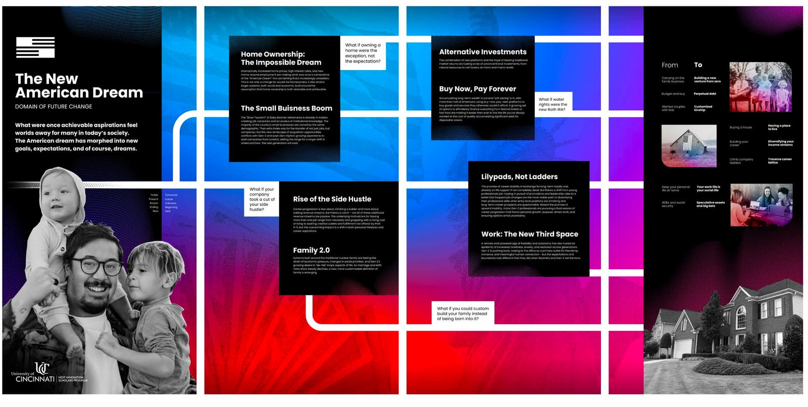

Futures Forum 2026
Overview
Nobody can predict the future. Not an analyst, not a big tech developer, not even a futurist. But what we can do is imagine the many possible ways that tomorrow can take shape in an effort to thrive in any possible future. This is the purpose of the University of Cincinnati's strategic foresight research lab, one of only three undergraduate labs across the country doing this type of work. Each year the team conducts a year's worth of research then shares that work at the Futures Forum. Last year, I designed the posters for the first ever forum, and this year I got to do it again — bigger and badder.

What is the Futures Forum
During the Futures Forum, attendees sit in on industry panels and keynote speakers (hey, there's me!). Then they step into our curated experience where they don't just learn about our research — they step into the worlds of tomorrow.
Swipe — The four-poster series — one per driver of change. Click any poster to open it full-screen.
Early Digital Sketches
Early sketches explored different ways to literally represent diverging time moving between the present and many futures. Over time this was refined into the four-poster series.
But before the Futures Forum could happen, other projects had to take shape…
The Foresight Lab Logo
As the scope of our research grew beyond UC's NEXT Innovation Scholars Program, it became necessary to create a new identity — a visual shorthand for thought leadership that had extended to US Bank, Forum for the Future, and Substack.
The mark comes from the three-horizons model, a staple of any foresight curriculum. The highlighted red is the third horizon: the emerging far future.
SXSW 2026
Before hosting the Forum, the team traveled to SXSW to present our work. We built an experiential showcase where participants completed an innovation passport to enter a drawing — plus twelve kitschy stickers and a madlib activity.
Undisciplined by Design
In-person engagement is crucial, but online platforms keep the Foresight Lab's stream of content continuous. Key to that is the Undisciplined by Design podcast, which launched on YouTube this year.
What are we showcasing?
Two things sit at the core: the driver descriptions on the main posters, and the artifacts — imagined pieces of design someone might encounter in daily life in the future, like this poster series for an "enhanced" Olympic games.